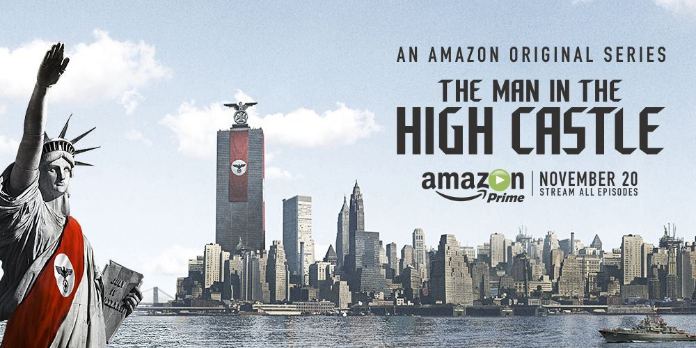

Le Maître du Haut Château (The Man in the High Castle) est une série télévisée uchronique américaine, dont le pilote a été diffusé le 15 janvier 2015 sur la plateforme de vidéo à la demande Prime Video. Les dix premiers épisodes de la série sont disponibles sur Amazon depuis le 20 novembre 2015. Il s'agit de l'adaptation du roman Le Maître du Haut Château de Philip K. Dick (1962). La série est produite par Ridley Scott, le réalisateur de Blade Runner en 1982, également adapté du roman de Dick Les androïdes rêvent-ils de moutons électriques ? (1966). La série a été renouvelée pour une deuxième saison, diffusée le 16 décembre 2016 puis pour une troisième saison, diffusée le 5 octobre 2018. Amazon a confirmé qu'une quatrième saison composée de dix épisodes est d'ores et déjà en production. La série est disponible depuis le 14 décembre 2016 dans tous les pays francophones disposant du service Prime Video.
En 1947, les États-Unis ont capitulé face à l'Empire du Japon et l'Allemagne nazie, après le largage par ces derniers d'une bombe A sur Washington D.C.. Le territoire américain est alors divisé en trois espaces distincts : le territoire qui s'étend de la côte est jusqu'aux Montagnes Rocheuses forme le « Grand Reich Nazi » (« Greater Nazi Reich »), dont la capitale est située à New York et où se trouvent les bureaux de l’Obergruppenführer John Smith ; les Rocheuses forment la Zone Neutre (« Neutral Zone ») ; enfin, des Rocheuses à la côte ouest se trouvent les États du Pacifique, sous autorité japonaise, la capitale se situant à San Francisco où siègent le ministre du Commerce Nobusuke Tagomi et l'inspecteur en chef de la police militaire (« Kenpeitai ») Takeshi Kido. En 1962, alors que le Führer Adolf Hitler est malade, les tensions politiques entre l'Allemagne et le Japon sont à leur paroxysme. Dans cette ambiance de guerre froide, un groupe de résistants tente de sécuriser les images d'un film secret, The Grasshopper Lies Heavy (La sauterelle pèse lourd, en français), recherché par le fameux « Maître du Haut Château ». Mais les polices japonaise et allemande sont sur leurs traces.